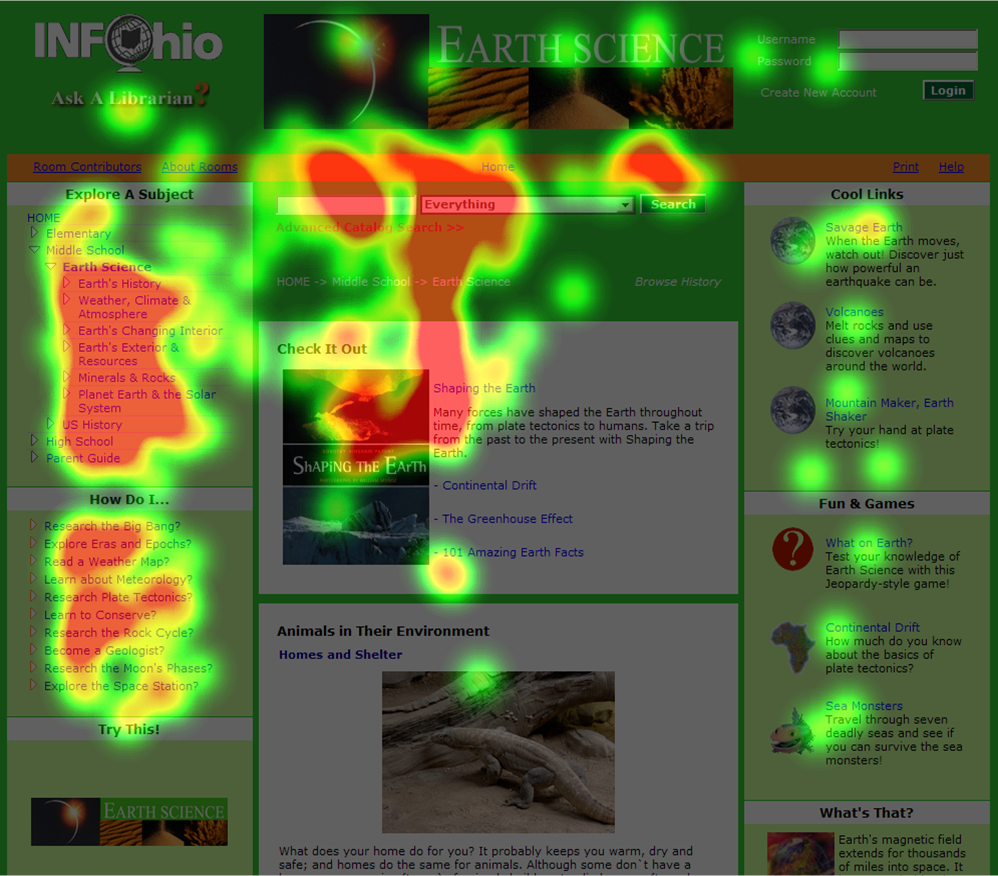

Introduccion
En la actualidad la interacción con los ordenadores es casi obligatorio debido a su enorme importancia y a la
enorme interconexión del mundo, en el caso de muchas personas el acceso a una computadora es imposible debido
a enfermedades incapacitantes como la parálisis cerebral o daños nerviosos.
Para solventar esta incapacidad surgen sistemas como las interfaces basadas en movimiento ocular (y otras partes del cuerpo como la cabeza), que en función de la posición del globo ocular y sus elementos permiten a un usuario discapacitado usar una computadora.
Aunque principalmente se hablara de eyetracking, tambien se hablara sobre formas similares a este (usando el mismo concepto de rastreo).
El "Dispositivo"
La mayoría de estos dispositivos siguen el funcionamiento del Eye Tracking (aunque también existen algunos basados en el movimiento de la cabeza, estos son menos populares), los que han demostrado mayor funcionalidad son los siguientes:
Eye tracking basado en electrodos: consiste en la aplicación de varios electrodos rodeando los ojos, los cuales en función del movimiento de los mismos pueden traducir el movimiento en acciones. La mayor ventaja que este sistema posee es la posibilidad de usarse en la oscuridad, debido a que no requieren del reflejo ni de la visibilidad del ojo para funcionar, aunque su mayor desventaja es la incomodidad del sistema
Eye Tracking de contacto: consiste en el uso de unas lentes de contacto por parte del usuario, las cuales analizan sus movimientos, traduciéndolos a la computadora. Este sistema cuenta con una gran precisión, pero a cambio causa incomodidad al usuario y pueden desprenderse del ojo con facilidad.
Eye tracking por reflejo: este sistema se basa en aprovechar el reflejo de la luz en el ojo, a partir de este reflejo (dado en la córnea) y el centro de la pupila se crea un patrón que permite traducir los movimientos del ojo en movimientos para la computadora. La ventaja de este sistema es que no requieren de ser invasivos para con el usuario, como principal problema es una menor precisión que otros sistemas.
Eye Tracking por cámara: consiste en analizar los ojos y su posición, y en función de ese análisis el sistema crea un patrón aprendiendo la forma que tienen los ojos del usuario de ver. Su principal ventaja es económica, ya que al no requerir de ningún hardware posee unos costes reducidos, aunque a cambio posee una precisión inferior a otros. Algunas aplicaciones importantes son las siguientes:
- "Camera mouse": sustituye a un ratón convecional analizando los movimientos de una parte del cuerpo elegida, ya sean los ojos, la cabeza o un dedo.
- "Eviacam": esta poensado como sustituto del ratón, a traves de los movimientos de la cabeza
-
-
-
-
-
-

Su importancia
La importancia clara de esta clase de sistemas radica en permitir a usuarios que normalmente no podrían utilizar una computadora, darles un la capacidad de interactuar con las computadoras, aunque sea a través de un sistema tercero.
¿Deseas saber más?